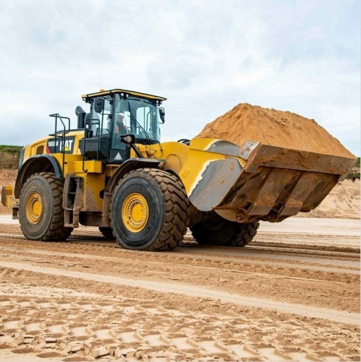
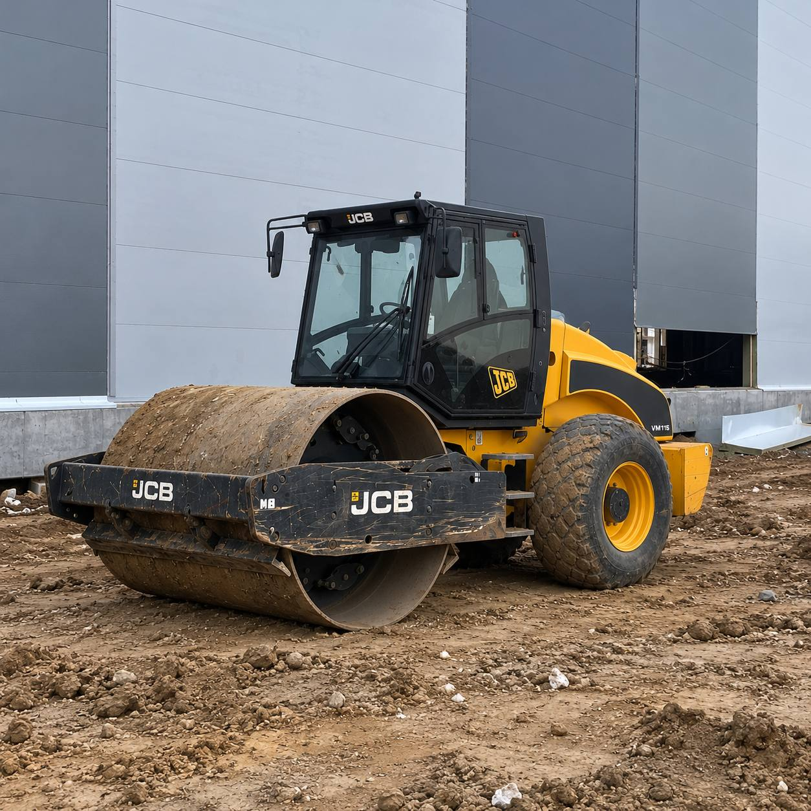
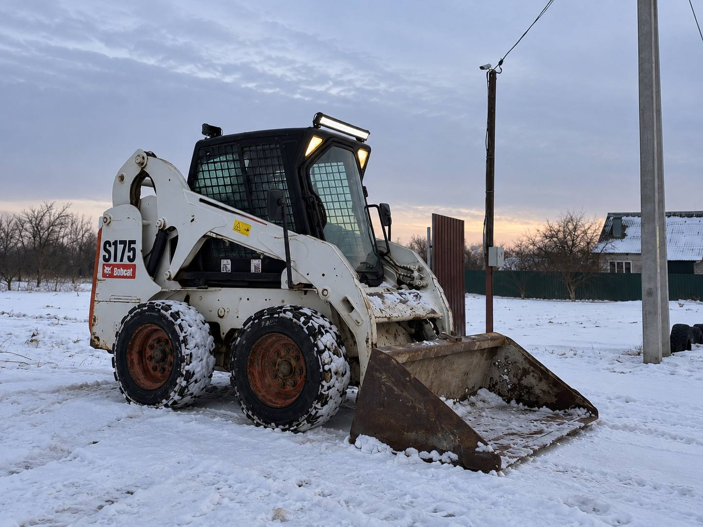
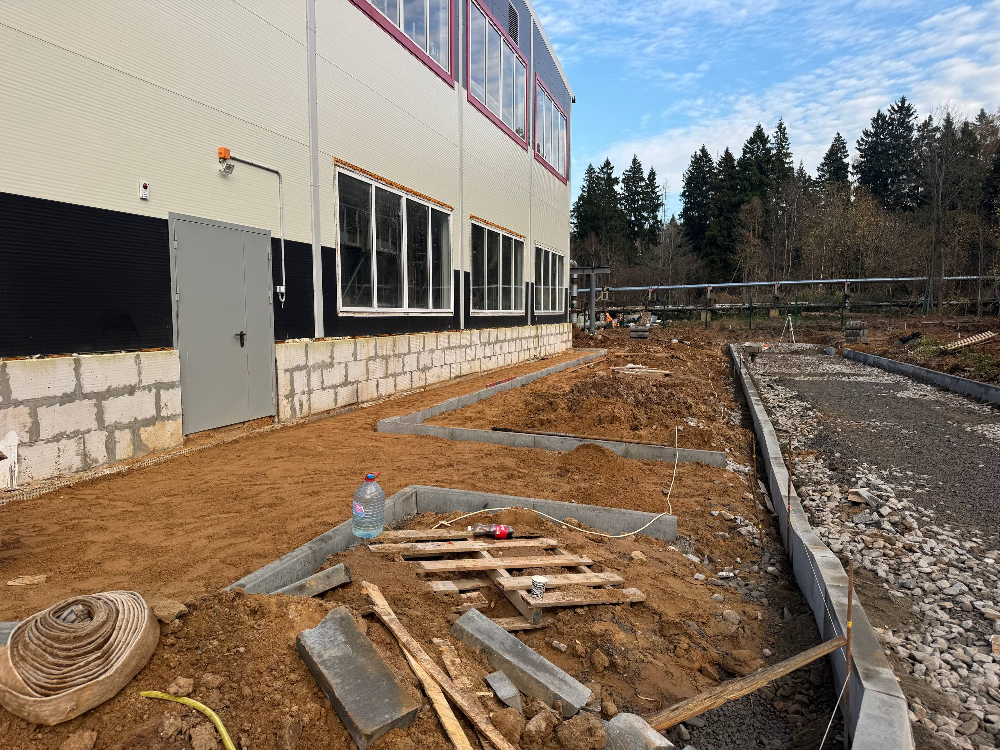
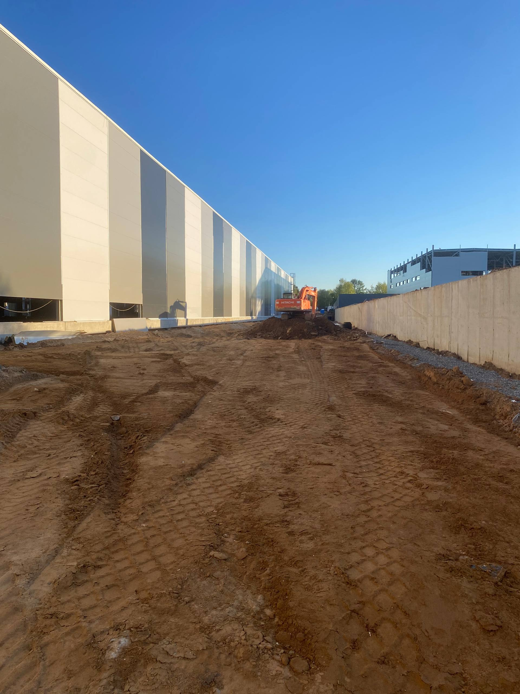

Аренда спецтехники
Экскаваторы-погрузчики, катки, погрузчики и самосвалы. Всегда с опытным оператором.
Аренда техники с оператором, асфальтирование и благоустройство под ключ. Цена и срок фиксируются в договоре.

Один подрядчик на весь цикл: от земляных работ до асфальта и благоустройства. Не нужно искать и согласовывать нескольких исполнителей.
Экскаваторы-погрузчики, катки, погрузчики и самосвалы. Всегда с опытным оператором.
Дороги, дворы, парковки и тротуары. От подготовки основания до финальной укатки.
Бордюры, площадки, проезды и планировка территории под ключ.
Котлованы, траншеи, разработка и планировка грунта.
Основания, площадки, въезды и дорожки.
Газоны и посадки. Финальный этап после дорожных и земляных работ.
Машины в рабочем состоянии, подача после согласования графика. Техника сдаётся только вместе с оператором.

Экскаватор-погрузчик. 3 машины в парке.
С оператором · цена по договорённости
Грунтовый каток. Уплотнение основания.
С оператором · цена по договорённостиГусеничный погрузчик. Работа на грунте и рыхлых основаниях.
С оператором · цена по договорённости
Мини-погрузчик. Небольшие объёмы и тесные участки.
С оператором · цена по договорённости
Укатка асфальта. Финишное уплотнение покрытия.
С оператором · цена по договорённостиСамосвал. Подвоз и вывоз материалов.
С оператором · цена по договорённостиСамосвал. Подвоз и вывоз материалов.
С оператором · цена по договорённостиСтоимость аренды зависит от объекта и условий. Расчёт после бесплатного выезда на замер.





Фотографии этапов работ. Нажмите на снимок, чтобы рассмотреть детали.
Обсудить работы на вашем объектеС нами работали
Звоните или пишите в Telegram и WhatsApp. Коротко опишите задачу.
Выезжаем на объект, смотрим основание и объём работ.
Цену называем после замера: на малые объёмы сразу, на большие за 1–2 дня. Цена и срок фиксируются в договоре.
Работаем своей техникой и людьми, контролируем качество на каждом этапе и сдаём объект.
Срок зависит от вида работ и условий объекта. Он указывается в договоре.
Знаем, где объекты подводят: погода, основание, сроки. Поэтому делаем по технологии и берём ответственность по договору.
Ответим быстро и назовём стоимость после осмотра объекта.